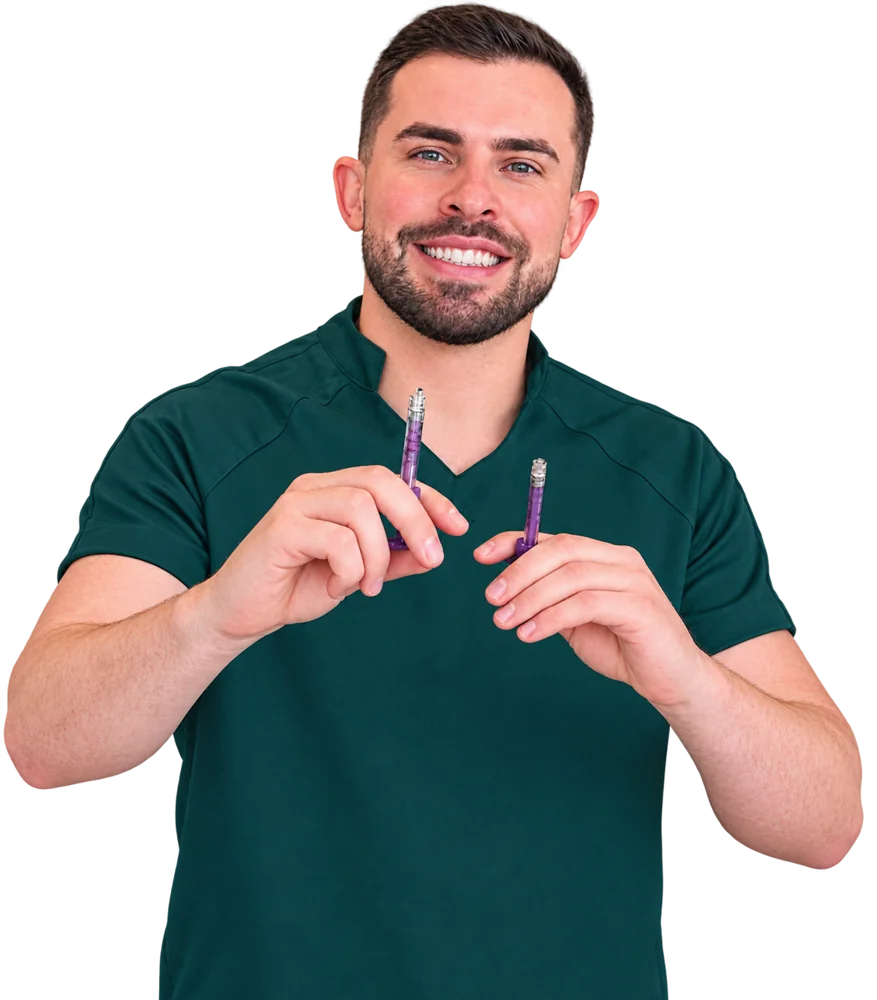

biomedicina estética
Profissional
01 / 07
CONTATO
Estética facial • Rejuvenescimento
Realce sua beleza com naturalidade.
📍 Criciúma - SC
Seg. a sex. 09:00–18:00 · Sáb. 09:00–17:00 · Dom. fechado
+55 48 8846-8136
Biomédico Esteta · CRBM 15786 · Criciúma - SC